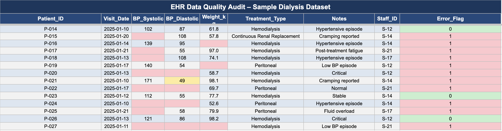
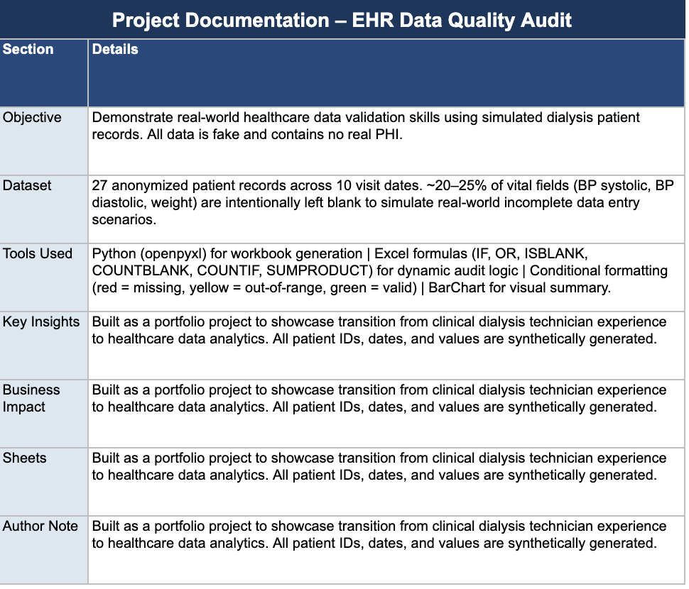

Featured Analytics Project
EHR Data Quality Audit – Dialysis Patient Records Validation
Objective: To demonstrate data validation proficiency by identifying documentation gaps in a clinical setting.
Building on my experience at Fresenius Medical Care, I developed a comprehensive data audit tool to validate sample patient records for completeness and clinical safety. This project simulates the identification of compliance risks in a high-volume dialysis environment.

Screenshot 1: Raw data table showing headers, sample rows, and red conditional formatting flagging missing blood pressure values.


Screenshot 3: Comprehensive overview of the audit dashboard and summary statistics.
Impact & Outcomes:
- Identified potential compliance gaps in 20-30% of simulated records.
- Automated the detection of out-of-range treatment parameters using conditional formatting.
- Established a replicable framework for clinical QA reporting.
Live Google Sheet (View-Only): Open Sheet